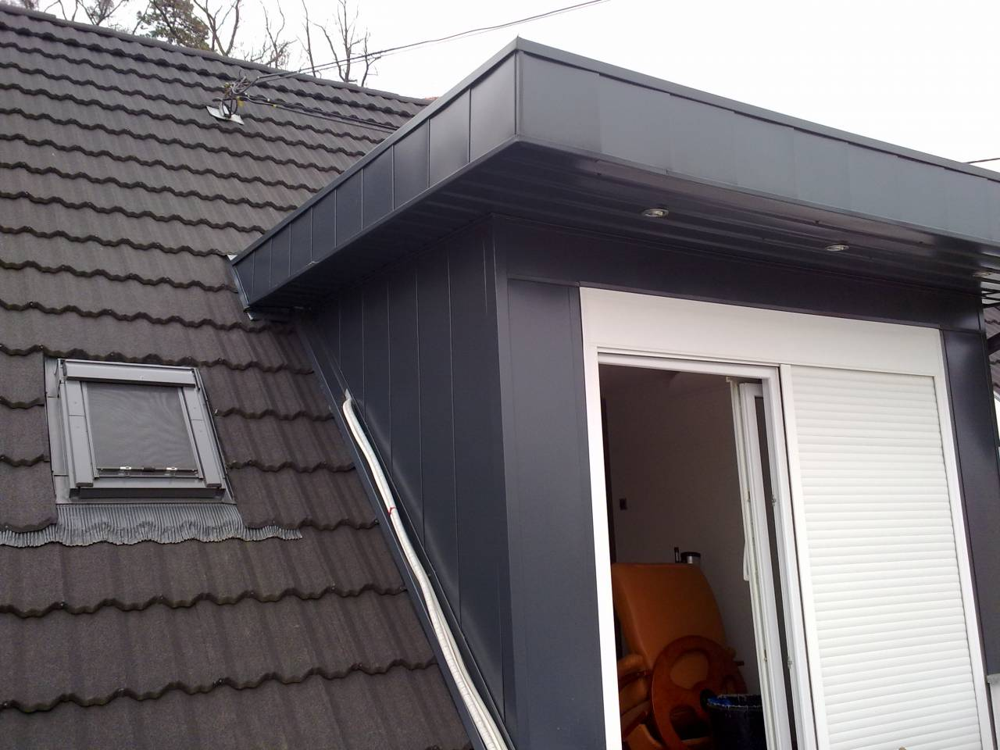
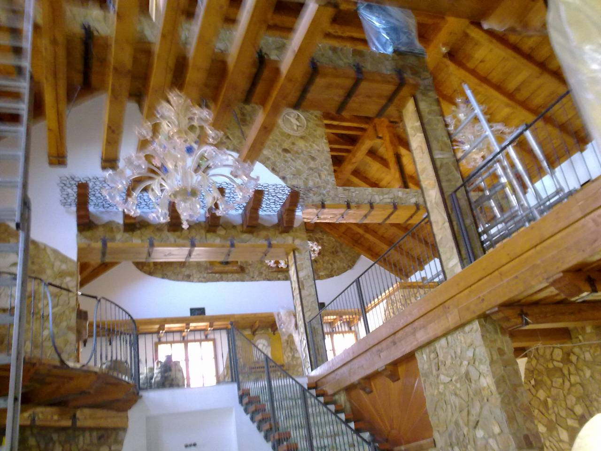
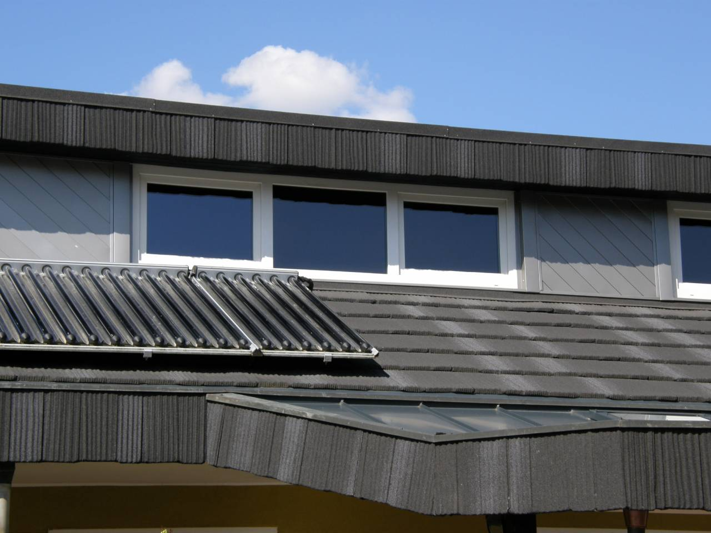
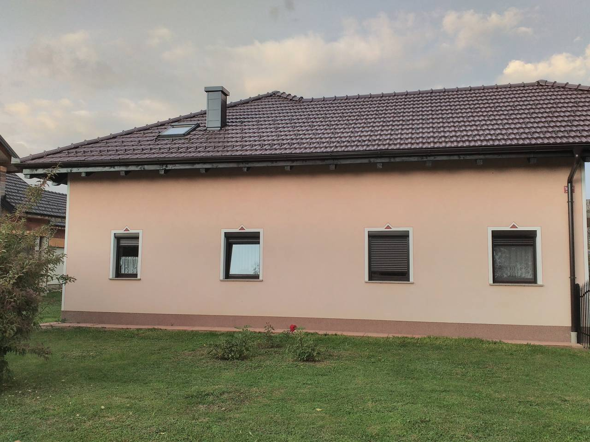

Kleparstvo - krovstvo Alojz Kavaš s.p.
Streha.Po navedbah podjetja od leta 1989.




Kleparstvo - krovstvo Alojz Kavaš s.p.


Kar piše spodaj, je povzeto po opisu storitev podjetja. Obseg in izvedbo dogovorimo na ogledu.
Jeklene kritine, opečna kritina, tegola, valovite salonitke in druge kritine.
Žlebovi, razne obrobe, oblačenje napušča, strelovodi. Izdelava in montaža.


Izdelava lesenih in kovinskih konstrukcij ter ravnih streh.
Izdelava pergol in raznih napuščev.
Izdelava in obloga frčad.
Pločevinaste obloge dimnikov.

Podjetje Kleparstvo - krovstvo Alojz Kavaš s.p. je po navedbah podjetja ustanovljeno leta 1989 (v poslovnem registru od leta 2003) in pokriva strehe v severovzhodni Sloveniji.
Poleg prekrivanja streh izdelujemo tudi različne kleparske izdelke iz različnih materialov, za katere nudimo tudi montažo. Opravljamo pa tudi različne lesene in kovinske konstrukcije.
Pri izbiri streh in konstrukcij svetujemo.Iz predstavitve podjetja

Lastne fotografije podjetja z izvedenih objektov.





Pokličite za ogled. Svetujemo pri izbiri strehe in konstrukcije.